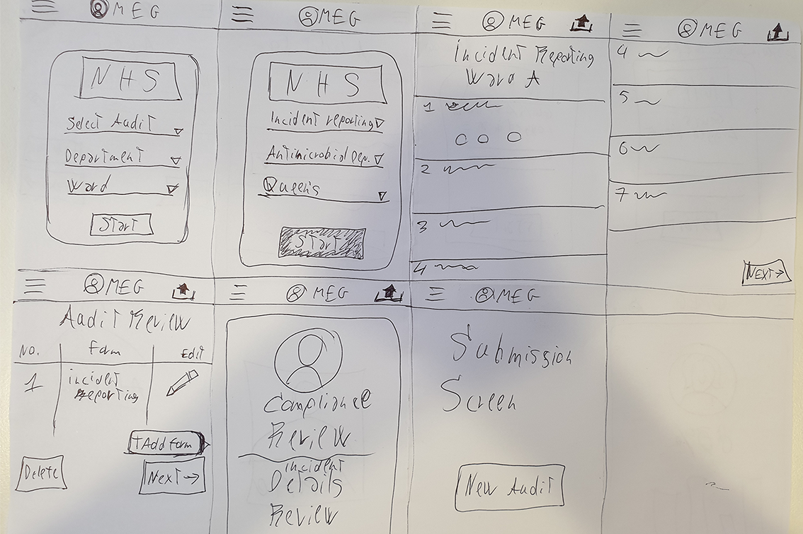
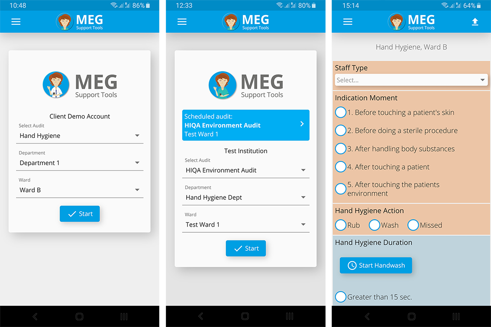
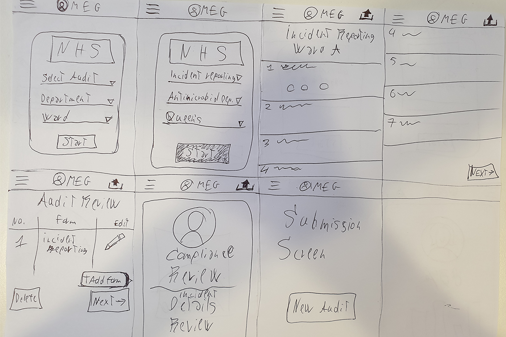
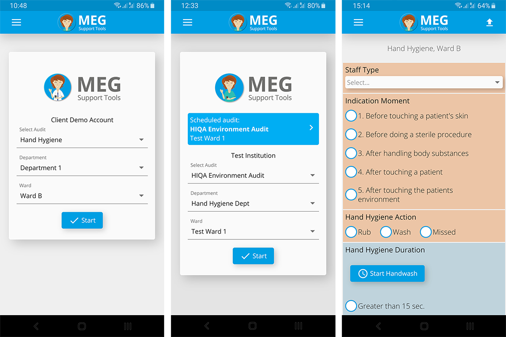

The MEG Audit Tool is an auditing and incident reporting app that allows for quick and easy collection of data, creates instant compliance reports and
issue reports, and allows logging of custom issues with added media options and e-mail notifications sent directly to issue handlers.
My Role
On this project, I supervised the entire re-design of the interface, the UX improvements to user flows, implemented most of the designs using CSS3 and Angular 5, and managed a junior designer.
When I started work on this project it was built using Angular 2, and the interface was antiquated, crowded and not user friendly.
It was agreed after some discussion with the dev team that the project needed upgrading to Angular 5: This gave us an opportunity
to redesign the interface while implementing Angular Material into the codebase.
There where two main problems with the old version of the project:
Navigation:
Users often got lost in the clunky interface, having to learn how to use the system through training sessions or asking for help to the customer support representatives.
In particular they did not know how to navigate the app using the side menu, how to access saved but unsubmitted audits,
and often where under the impression the audit was submitted even though it wasn't.
Audit Selection:
Before selecting an audit a user must enter some required information, such as the location the audit is being carried out in, the institution it's being carried out for,
and of course the audit itself must be selected.
In the original version of the project, the user had to select the location and institution first, and where then brought to a separate screen in which they could select the audit and start it.
This constituted an unnecessary and time consuming extra step.
 



Navigation:
I started by mapping out the requirements for navigating the app: the core navigation elements are all contained in a side menu, but some users didn't know how to access it, due to the overcrowded design of the app bar and the unfamiliar icon design.
The secondary navigation item in the app bar is the "Submit audit" button: an icon that displays once the user starts carrying out an audit, and exhibits a red badge with the count of completed observations. The third item appearing in the app bar was the
log in icon, showing the logged in user's account name. However, this icon was not responsive, and served no purpose. This was confusing, as the mental model most users had for it was that if clicked it would offer the option to log out and/or switch accounts.
The prototype we developed for the new app bar was a simplified version of the existing one, with the log in icon removed and the side menu icon replaced with a burger menu icon as per Material Design guidelines.
The initial testing was split between two groups that where given a task to complete. Group A was using the existing version of the app, while Group B was using the re-designed prototype, with both groups being completely unfamiliar with the Audit Tool.
Group B exhibited both a higher success rate and greater speed in task completion on testing round 1. In testing round 2, the groups switched and were asked to carry out the same task. Even accounting for the added familiarity due to having already carried out the task,
the group using the re-designed prototype still had a faster completion time, by an average of 1 second.

Audit Selection:
The problem was originating from an incorrect grouping of information. Why keep the audit selection dropdown separate from the others? The audit type directly depends on the rest of the information that needs to be selected. So the first thing we did was to group all the required dropdowns in the one card.
This simplified the selection process greatly, alongside the interface design improvements. With reduced loading times due to not having to render a new screen and the ease of selecting all relevant information without having to navigate away from a focus point,
the time it took for users to select and start an audit was reduced by almost a second.
Once this solution was implemented, through discussion with the dev team and some users an idea for further improvement of this section emerged: Administrators can schedule audits and assign them to users via the CMS.
We thought it would be helpful to users if we could show them the audits scheduled for that day once they logged in. We designed a button that, when clicked, would auto fill any information pertinent to the audit it was representing,
or start the audit directly if all the necessary information had already been entered through the scheduling process. This resulted in a higher rate of audit completion from our main clients.


Individual Tests
Iterations
User trials
The user requirements must always be at the center of any decision making, designing and testing. Once a system meets them fully, focusing on how to
facilitate them furder is the only way to improve a product without relying o the easy way out of adding features just for the sake of it.
Back